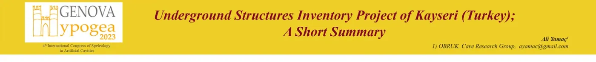

Underground Structures Inventory Project of Kayseri


A DOVECOTE NEAR VEKSE VILLAGE

SUBAŞI MONASTERY

CHURCH OF SUBAŞI MONASTERY


MIMAR SINAN UNDERGROUND CITY


CHURCH INSIDE THE AGIRNAS UNDERGROUND SHELTER

AGIRNAS UNDERGROUND SHELTER

KORAMAZ VALLEY TOPOGRAPHIC MAP (E. TOK)

UNESCO WEB PAGE SHOWING THE KORAMAZ VALLEY AS WORLD HERITAGE SITE TENTATIVE

OUR SIX PRELIMINARY REPORTS FOR KAYSERI UNDERGRUND SETTLEMENTS INVENTORY PROJECT

THREE DIFFERENT OPERA IPOGEA JOURNALS WITH OUR PHOTOS ON THE COVER

ENGRAVING OF HAMILTON SHOWING KAYSERI AND MOUNT ERCIYES BACKGROUND (1842)

PHOTO OF BANSE EWALD SHOWING KAYSERI AND MONT ERCIYES (1919)

POSITIONS OF 14 ROCK-CUT CHURCHES OF ISPIDIN VILLAGE

VEKSE NO 1 ROCK-CUT CHURCH


MAIN CHAMBER OF DOĞANLI UNDERGROUND SHELTER

DIMITRE ROCK-CUT SETTLEMENTS


DEREVENK MONASTERY

BÜYÜK BÜRÜNGÜZ UNDERGROUND CITY

ALL UNDERGROUND SHELTERS EXPLORED SO FAR

ALL STRUCUTRES EXPLORED SO FAR

AN UNDERGROUND SHELTER IN DIMITRE VILLAGE

A DOVECOTE NEAR AGIRNAS VILLAGE